Ürününüzü Mimarın Modeline Sokun
Bir yapı ürünü, mimarın modeline giremiyorsa o projede yok sayılır. BIM içerik üretimi; ürününüzün üretim CAD modelini, mimarın Revit projesine sorunsuz yerleşen, veri taşıyan ve doğru davranan bir BIM objesine dönüştürür.

Üretim CAD modeli imalat için çizilir: her pah, her diş, her civata yerinde durur. Bu model mimarın projesine olduğu gibi konduğunda dosya şişer, görünüm kilitlenir ve model kullanılamaz hale gelir. BIM objesi ise tasarım kararı vermek için üretilir — geometri sadeleşir, buna karşılık ürünün verisi eksiksiz taşınır.
Autodesk'in yapı ürünü üreticilerine yönelik yaklaşımı bunu üç başlıkta toplar: katalog ürünleri için, modelleri meta veri ve MEP bağlantılarıyla sadeleştirilmiş 3B dijital temsillere dönüştürmek; özel ürün ve sistemler için, CAD verisini bina veya tesis bağlamındaki BIM modeliyle bütünleştirmek; büyük ölçekli projelerde ise tüm paydaşların buluştuğu ortak veri ortamını kurmak.
Bunun ticari karşılığı nettir: ürününüz mimarın kütüphanesinde hazır duruyorsa şartnameye girmesi kolaylaşır. Doğru kurulmuş bir aile, tek dosyadan tüm ürün gamınızı (tip kataloğu) sunar; yanlış kurulmuş bir aile ise ilk revizyonda çöp olur. Cadbim, Autodesk Gold Partner olarak bu içeriği standardıyla birlikte üretir.
Sıfırdan Revit ailesi
Parametrik, tip kataloglu ve doğru kategoride aileler; Revit'in kendi araçlarıyla, eklenti bağımlılığı olmadan.
CAD'den BIM objesine
Inventor, SolidWorks veya STEP verisinin sadeleştirilip veri zenginleştirilerek .rfa ve IFC olarak yayınlanması.
Veri ve parametre standardı
Paylaşılan parametreler, adlandırma kuralı, malzeme ve MEP bağlantı noktaları; teslim öncesi kontrol listesi.
Kütüphane yönetimi
Ofis şablonu ve onaylı aile kütüphanesinin tek kaynaktan yönetimi; sürüm ve güncelleme düzeni.
Revit Aile (Family) Üretimi
Doğru kategoride, parametrik ve tip kataloglu aileler; ana hatlar, referans düzlemleri ve kısıtlar en baştan sağlam kurulur.
CAD → BIM Dönüşümü
Inventor, SolidWorks veya STEP verisinin sadeleştirilmesi; üretim detayı atılırken tasarım için gereken geometri korunur.
Parametre & Veri Zenginleştirme
Paylaşılan parametreler, üretici kodu, performans değerleri ve malzeme bilgisi; metraj ve şartname doğrudan modelden alınır.
MEP Bağlantı Noktaları
Boru, kanal ve elektrik bağlantı noktaları tanımlanır; obje sistem içinde doğru davranır, bağlantı analizine girer.
Kütüphane & Şablon Yönetimi
Ofis şablonu, adlandırma standardı ve onaylı aile kütüphanesinin tek kaynaktan yönetimi; sürüm ve güncelleme düzeni.
Yayınlama: .rfa ve IFC
Revit ailesinin yanında IFC çıktısı; Revit kullanmayan paydaşlar da ürününüzü kendi ortamında kullanır.
Aynı teknik iş, iki taraf için farklı bir problemi çözer — hangisi olduğunuza göre farklı bir paketle geliyoruz.
Yapı Ürünü Üreticileri
Birincil kitleÜrününüz mimarın kütüphanesinde hazır durmuyorsa şartnameye girmesi zorlaşır. Üretim CAD modelinizi, projeye sorunsuz yerleşen ve veri taşıyan bir BIM objesine çeviriyoruz.
- Ürün gamının tek ailede tip kataloğuyla sunulması
- Üretici kodu, performans değeri ve malzeme verisinin objeye işlenmesi
- MEP bağlantı noktalarının tanımlanması
- .rfa ve IFC olarak yayınlama
Mimarlık & İç Mimarlık Ofisleri
İkincil kitleSorun içerik üretmek değil, içeriği yönetmek. Ofis kütüphanesini standarda oturtuyor, dışarıdan gelen üretici ailelerini denetleyip ofis standardınıza uyarlıyoruz.
- Ofis şablonu, adlandırma ve paylaşılan parametre standardı
- Onaylı aile kütüphanesinin tek kaynaktan yönetimi
- Dışarıdan gelen ailelerin sadeleştirilmesi ve kategori düzeltmesi
- Ekibe aile oluşturma eğitimi (ATC)
İlgili yazılım ve donanım sayfaları

AEC Collection
Revit, AutoCAD, Navisworks ve Forma araçlarını bir arada sunan yapı sektörü koleksiyonu.

PD&M Collection
Inventor ve Vault ile üretim tarafındaki CAD verisinin kaynağı; CAD→BIM akışının başlangıcı.

Autodesk Revit
BIM ailelerinin üretildiği ve kullanıldığı ana ortam; aile düzenleyici ve tip kataloğu.

Autodesk Inventor
Üretim CAD modelinin kaynağı; sadeleştirme ve Revit ile karşılıklı çalışma.

Vault PDM
Aile kütüphanesinin sürüm ve revizyon kontrolüyle merkezî yönetimi.
Forma Data Management
Onaylı kütüphanenin proje ekipleri ve dış paydaşlarla paylaşımı.

Navisworks
Üretilen objelerin proje bağlamında çakışma ve koordinasyon denetimi.
Yazılım Geliştirme
Toplu aile üretimi, parametre aktarımı ve katalog otomasyonu için özel araçlar.
İlgili endüstri sayfalarını inceleyin
Cadbim Teknik Destek kanalında yayınladığımız, BIM içerik ve aile üretimiyle ilgili oturumlar.

Üretim Sektörü için BIM (BIM Objects)
Yapı ürünü üreticilerinin BIM ekosistemine nasıl dahil olduğunu anlatan oturum.

Revit ile sıfırdan Family yaratmak ve mevcut Family dosyalarını düzenlemek
Aile oluşturmanın temelleri ve var olan ailelerin düzenlenmesi.

Revit: Yeni başlayanlar için Family oluşturma
İlk ailenizi kurarken izlenecek adımlar.

Revit projesini Family olarak kaydetme (.rvt → .rfa)
Proje olarak modellenmiş bir ürünü yeniden kullanılabilir aileye çevirme.

InfraWorks: Parametrik içerik oluşturma
Inventor bileşenleriyle altyapı kitaplıklarını genişletme.
Cadbim; Autodesk Gold Partner ve Adobe Gold Reseller Partner, HP, Microsoft, Chaos ve UltiMaker yetkili iş ortağıdır.

Kutu yazılım satmıyoruz — beş adımlı kanıtlanmış uygulama metodolojimizle süreci uçtan uca üstleniyoruz.
Ürün Gamı Analizi
Hangi ürünler tek ailede toplanabilir, hangileri ayrı durmalı? Parametre listesi ve ölçü tabloları üzerinden aile mimarisi kurulur.
LOD ve Veri Şartnamesi
Her ailenin hangi detay seviyesinde ve hangi parametreleri taşıyacağı yazılı olarak tanımlanır; sonradan tartışma çıkmaz.
Pilot Aile
Önce tek bir ürün ailesi uçtan uca üretilir ve gerçek bir projede denenir; onaylanan kalıp tüm gama uygulanır.
Seri Üretim ve Denetim
Kalan aileler pilot kalıba göre üretilir; her teslim öncesi kontrol listesiyle kategori, parametre ve dosya boyutu denetlenir.
Yayınlama ve Bakım
.rfa ve IFC çıktıları kütüphaneye alınır; ürün değiştiğinde ailenin nasıl güncelleneceği ve sürümleneceği kurala bağlanır.
Yüzlerce kurulumdan damıtılmış, işleyen iyi uygulama setimiz.
Doğru kategori seçimi
Aile yanlış kategoride kurulursa metraj ve filtreler bozulur; kategori en baştan doğru seçilir.
Sağlam iskelet
Referans düzlemleri ve kısıtlar önce kurulur; geometri bunlara bağlanır, aile revizyonda dağılmaz.
Tip kataloğu
Aynı mantığın ölçü varyantları tek ailede toplanır; her ölçü için ayrı dosya üretilmez.
Paylaşılan parametre
Metraja ve şartnameye girecek veriler paylaşılan parametreyle tanımlanır; proje arası tutarlı kalır.
Dosya boyutu disiplini
Üretim detayı taşınmaz; mimarın modelini ağırlaştıran aile kullanılmaz.
Teslim kontrol listesi
Kategori, adlandırma, parametre, bağlantı noktası ve boyut her teslimde tek tek denetlenir.
Aradığınız yanıt burada yoksa uzmanımıza doğrudan sorabilirsiniz.
Elimde sadece üretim CAD modeli var, yeterli mi?
Hangi LOD seviyesinde üretilmeli?
IFC de veriyor musunuz, sadece Revit mi?
Ürün gamım geniş, her ürün için ayrı dosya mı gerekiyor?
Mimarlık ofisiyiz, üretici değiliz — bu çözüm bize ne sağlar?
Dışarıdan indirdiğimiz aileler modelimizi şişiriyor, ne yapmalı?
Ekibime bu işi öğretebilir misiniz?
Lisans satışı işin başlangıcı — kurulumdan eğitime, destekten yenilemeye kadar tüm yaşam döngüsü tek muhatapta kalır.
Esnek Abonelik ve Lisans Modelleri
Tek ve çok kullanıcılı abonelikler, 1 ve 3 yıllık dönemler, koleksiyon avantajı — kullanım profilinize uygun planı birlikte belirliyoruz.
Yetkili Eğitim Merkezi (ATC)
Autodesk Yetkili Eğitim Merkezi olarak sertifikalı eğitimler; İzmir merkez ofisimizde sınıf ve çevrim içi programlar.
Türkçe Teknik Destek
Kurulum, lisans yönetimi ve teknik sorularınızda Türkiye'den, Türkçe, aynı gün yanıt.
Bu alanda destek alın
Teklif, danışmanlık veya eğitim için iletişime geçin.